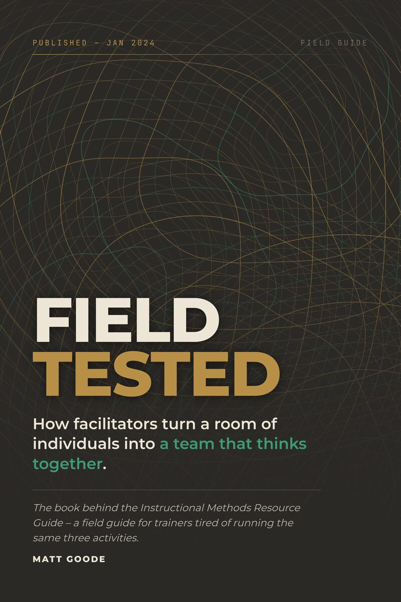

Leadership is infrastructure
Your company runs on you.That was never the plan.
Somewhere between the first hire and the fortieth, every decision started routing through one desk. Not because anyone designed it that way. Because nobody designed it at all.
You already know which one is yours
Pick the one that sounds most like the last three months. One only, and the closest fit rather than the complete picture. What you choose names the part of the system to look at first.
What I do
Three kinds of room, one argument
Executive coaching and fractional operations for the founder who has become the bottleneck. We build the decision architecture, the handoff system and the operating cadence that let the company keep moving when you are not in the room.
- Coaching engagements
- Fractional COO
- Leadership team design
Twenty years in schools, seventeen of them at McDonogh, as teacher, coach, dean of students and administrator. Leadership development for the adults in the building: heads and senior teams, division directors and department chairs, and the people leading from the middle who were handed a program and no training. Shaped like a school year and priced like a budget line.
- Coaching and cohorts
- Decision rights and delegation
- Retreats, in-service and institutes
Leadership development under real consequence, built in humanitarian assistance at USAID. For nonprofit and public-sector teams where the work matters, the resources do not stretch, and nobody was trained to lead before they were asked to.
- Team development
- Facilitation
- Program design
Who you’d be working with
Twenty years inside the problem before I sold anyone a solution
Teacher, coach, dean of students and administrator across nearly two decades at an independent school. Then leadership and team development in humanitarian assistance at USAID. Now growth-stage founders, where honest feedback is the only kind on offer.
- Gallup-Certified Strengths Coach
- EQ-i 2.0 Certified Practitioner
- MSc in Sociology, London School of Economics
- MA in Education, Johns Hopkins University
- Working toward ICF credentials
London School of EconomicsMSc, Sociology
Johns HopkinsMA, Education
USAIDLeadership and team development
EQ-i 2.0Certified practitioner

Client work
Not praise. Changed behavior.
I participated in a delegation workshop sponsored by my employer, and used the framework in a 1:1 the next day. That doesn’t happen with most workshops.
I run a real dashboard for a living. I came in skeptical of the metaphor – I left with a usable distinction between what’s actually a leading indicator and what’s just a soft signal I’d have noticed anyway.
Most people assume you can hire fast and fire decisively. My world can’t. What I appreciated is that the core framework still held up once I did the translation myself, and Matt’s workshop does that translation for you.
The long version
One argument, written down three ways
A clutch is the only part of a car engineered to slip. Everything else is built to grip. It exists so two things spinning at completely different speeds can meet without shattering each other.
That is the part most organizations never build. The engine gets louder, the senior hire arrives, the offsite happens, and nothing reaches the wheels.
“My board chair handed this to me. I didn’t ask for it. Twenty pages in I decided to keep going, and that’s rare for me with this genre.”
“As a People leader, I notice when a framework’s language holds up under real HR scrutiny. The Coaching Prompts are the first thing from a leadership book I’ve actually used verbatim in a hard conversation.”
“Matt is the first I’ve seen who tried to bring it all together in one tome.”
-

Out now
CLUTCH
How Leaders Build Systems That Run Without Them. The operating system, in full, with a diagnostic for every part of it.
-

Out now
Field Tested
Seventy facilitation methods across seven categories, each one used in a real room under real consequence before it earned a page.
-

Coming 2027
No Average Brain
Neuroinclusive leadership. Why the systems we build assume one kind of mind, and what changes when they stop.
Next step
Thirty minutes, and you’ll know whether this is worth continuing
No deck, no pitch. Bring the thing that keeps landing back on your desk, and we will work out together whether it is a people problem or a design problem. It is almost always a design problem.
Prefer email? matt@thatsgoodedesign.com